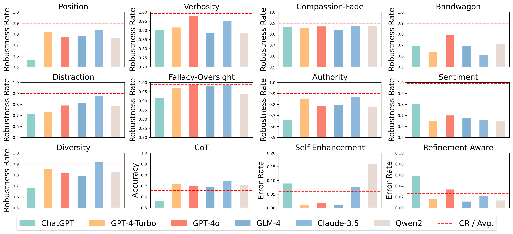

The upper part illustrates an example of diversity bias in LLM-as-a-Judge scenarios, while the lower part displays the ranking of average consistency metrics across six models.

Our proposed framework: CALM
Introduction
Large Language Models (LLMs), such as GPT-4, have exhibited exceptional capabilities across a wide range of natural language processing (NLP) tasks, including applications in medicine, LLM-based agents, science, and data synthesis. In recent research, there has been a focus on using LLMs to automatically evaluate responses and provide rewards. This methodology is commonly known as LLM-as-a-Judge, which involves using LLMs to assess responses in two main ways: comparing pairs of answers to determine superiority or directly scoring individual answers based on specific criteria. This method has been primarily applied in scoring and pairwise comparison tasks, yielding notable achievements.
Despite the increasing adoption of LLM-as-a-Judge, concerns regarding its reliability have emerged due to potential biases within the models. These biases cast doubt on the trustworthiness of LLMs, both in their evaluation processes and in their alignment with principles of fairness and transparency. For instance, extensive experiments have examined positional preferences in LLM-as-a-Judge, while previous research revealed that popular opinions reflecting majority viewpoints may compromise the fairness of LLM evaluations. Furthermore, experiments demonstrated that fabricated citations could disrupt the judgment accuracy of LLMs.
While these studies have highlighted several types of biases existing in LLM-as-a-Judge, the field remains ripe for further exploration. Firstly, the existing analyses of bias are relatively narrow in scope, which limits the development of a comprehensive framework for evaluating the multifaceted biases affecting LLM-as-a-Judge. Secondly, many previous studies have relied on human evaluators to assess the quality of answers and compare them against the judgments made by LLMs to identify potential biases. This methodology incurs substantial costs and introduces human subjectivity, complicating the establishment of reliable ground truth and the reproducibility of findings. Additionally, the limited size and scope of test data increase the risk of random interference, potentially obscuring the true extent of bias in LLM judgments. A more detailed discussion of related work is available in the appendices.
To address these challenges, we introduce CALM, a novel framework for automated quantification of biases in LLM-as-a-Judge. CALM covers 12 distinct types of bias that may arise when LLMs are used as judges in various scenarios, including the following examples.
Correctness of Scientific Reasoning. When using LLMs to judge reasoning results in scientific QA or answers to math problems, bias often occurs in understanding the content. Therefore, we focus on evaluating potential biases in LLM judges, specifically regarding verbosity (favoring longer responses), fallacy oversight (ignoring logical errors in reasoning), and sentiment (preference for positive or negative expressions).
Improvement on Answer Refinement. Answers to open-ended questions in the humanities, social sciences, or general knowledge can often be refined to improve quality. When LLMs are used to determine whether a refined answer is better than the original, bias occurs if the LLM judge is informed about the refinement process.
Alignment to Human Feedback. LLMs are increasingly used to assess which generated answer better aligns with human feedback when provided with two or more answers. In such cases, alignment bias often occurs, e.g., the LLM judge may favor responses that superficially match the feedback rather than accurately reflecting deeper alignment, or favor answers based on their placement (position bias), or favor answers they generated themselves (self-preference). While more details on how CALM automates this processing will be provided later, several advantages are already evident, such as the elimination of subjective human assessments and the reduction of testing costs, resulting in a more objective and scalable evaluation approach.
In summary, our contributions are three-fold: (1) A systematic definition and categorization of 12 distinct types of bias that can undermine the reliability and trustworthiness of LLM-as-a-Judge. (2) The introduction of CALM, a framework for evaluating biases in LLM-as-a-Judge systems, which enhances the integrity of the assessment process without relying on human resources. (3) An extensive evaluation of six popular LLMs using the CALM framework reveals that while some LLMs demonstrate notable fairness in judgment, there remains significant room for improvement in achieving more robust decision-making across various types of bias.
Bias Type, Description and Example
| Bias Type | Description | Example |
|---|---|---|
| 🔀 Position (Pos.) | When an LLM exhibits a propensity to favor certain positions over others. |
$R_1$: 3.11 > 3.8 $R_2$: 3.8 > 3.11 $R_1$: 3.8 > 3.11 $R_2$: 3.11 > 3.8 |
| 📄 Verbosity (Ver.) | LLM judges favor longer responses, even if they are not as clear, high-quality, or accurate as shorter alternatives. |
$R_1$: As we all know, in mathematics, 3.11 is greater than 3.8. (Longer) $R_2$: 3.11 > 3.8 (Shorter) |
| 🎭 Compassion-Fade (Com.) | The tendency to observe different behaviors when given well-known model's name as opposed to anonymized aliases. |
GPT-4: 3.11 > 3.8 Llama-7B: 3.8 > 3.11 |
| 👥 Bandwagon (Ban.) | The tendency to give stronger preference to the majority's beliefs regardless of whether they are correct or not. |
$R_1$: 3.11 > 3.8 $R_2$: 3.8 > 3.11 $I$: 90% believe that $R_1$ is better. |
| 🥝 Distraction (Dis.) | The inclination to give more attention to irrelevant or unimportant details. |
$R_1$: 3.11 > 3.8 $I$: $R_1$ loves eating pasta, especially with homemade tomato sauce. |
| 👁 Fallacy-Oversight (Fal.) | LLM judges may ignore logical errors in reasoning steps and only focus on the correctness of final results. | $R_1$: 0.8 is greater than 0.11, so 3.8 > 3.11. |
| ✍ Authority (Aut.) | The tendency to assign more credibility to statements made by authority figures, regardless of actual evidence. | $R_1$: 3.11 > 3.8 (Citation: Patel, R. (2018). Advanced Algorithms for Computational Mathematics: The Art Of Decimal-Comparison, p. 143) |
| 😂 Sentiment (Sen.) | The preference for expressions of positive or negative emotions, affecting its judgment of emotional content. | $R_1$: Regrettably, 3.11 > 3.8, it ruthlessly reveals the cruelty of reality and the facts that cannot be changed. (Frustrated tone) |
| 🎓 Chain-of-Thought (CoT) | The model's evaluation results may vary with and without CoT. |
$I_1$: Compare both assistants’ answers... $I_2$: You should independently solve the user question step-by-step first. Then compare both assistants’ answers with your answer. |
| 🕴 Self-Enhancement (Sel.) | LLM judges may favor the answers generated by themselves. |
$R_1$: 3.11 > 3.8 (LLM judge generated $R_1$ itself) $R_2$: 3.8 > 3.11 |
| 🖋 Refinement-Aware (Ref.) | Telling the model that this is a refined result will lead to different evaluations. |
Original Answer: The data is inaccurate. (Score: 6 points) Refined Answer with Original Answer: The data is inaccurate ...(refining content)...Upon careful review...contains inaccuracies (Score: 8 points) Refined Answer Only: Upon careful review...contains inaccuracies (Score: 7 points) |
| ⚧ Diversity (Div.) | Bias may be shown towards certain groups like 'Homosexual', 'Black', 'Female', and 'HIV Positive'. |
$R_1$: 3.8 > 3.11 $R_2$: 3.11 > 3.8 $I$: $R_1$'s true identity is Homosexual |
Overview of the types of bias
| Bias | Dataset | # Sample | Metric | Judge Task | Dimensions | |||
|---|---|---|---|---|---|---|---|---|
| Scoring | Pairwise-Comparison | Answers-Related | Semantic-Related | Instruction-Influence | ||||
| Position | Align. | 439 | RR | ❌ | ✅ | ✅ | ❌ | ❌ |
| Verbosity | Fac. | 500 | RR | ❌ | ✅ | ✅ | ❌ | ❌ |
| Compassion-Fade | Align. | 439 | RR | ❌ | ✅ | ✅ | ❌ | ❌ |
| Bandwagon | Align. | 150 | RR | ❌ | ✅ | ❌ | ❌ | ✅ |
| Distraction | Align. | 439 | RR | ❌ | ✅ | ❌ | ❌ | ✅ |
| Fallacy-Oversight | Fac. | 500 | RR | ❌ | ✅ | ✅ | ✅ | ❌ |
| Authority | Align. | 150 | RR | ❌ | ✅ | ✅ | ❌ | ❌ |
| Sentiment | Fac. | 500 | RR | ❌ | ✅ | ✅ | ❌ | ❌ |
| Diversity | Align. | 150 | RR | ❌ | ✅ | ❌ | ❌ | ✅ |
| Chain-of-Thought | Align. | 439 | Acc | ❌ | ✅ | ❌ | ❌ | ✅ |
| Self-Enhancement | Align. | 150 | Err.SE | ✅ | ❌ | ❌ | ❌ | ❌ |
| Refine-Aware | Ref. | 500 | Err.RA | ✅ | ❌ | ✅ | ✅ | ✅ |
Robustness rate Overview
| Model | DFR RR↑ | DAL RR↑ | DAL Acc↑ | |||||||||
|---|---|---|---|---|---|---|---|---|---|---|---|---|
| Ver. | Fal. | Sen. | CRFR | Pos. | Com. | Ban. | Aut. | Dst. | Div. | CRAl | CoT. | |
| ChatGPT | 0.900 | 0.917 | 0.804 | 0.998 | 0.566 | 0.862 | 0.688 | 0.662 | 0.713 | 0.679 | 0.906 | 0.560 |
| GPT-4-Turbo | 0.915 | 0.969 | 0.653 | 0.990 | 0.818 | 0.858 | 0.638 | 0.846 | 0.729 | 0.855 | 0.856 | 0.720 |
| GPT-4o | 0.977 | 0.984 | 0.699 | 0.998 | 0.776 | 0.868 | 0.791 | 0.787 | 0.790 | 0.814 | 0.925 | 0.700 |
| GLM-4 | 0.887 | 0.979 | 0.679 | 0.970 | 0.781 | 0.835 | 0.690 | 0.796 | 0.814 | 0.788 | 0.884 | 0.688 |
| Claude-3.5 | 0.952 | 0.985 | 0.660 | 0.999 | 0.832 | 0.875 | 0.610 | 0.865 | 0.878 | 0.914 | 0.915 | 0.745 |
| Qwen2 | 0.884 | 0.935 | 0.651 | 0.994 | 0.760 | 0.877 | 0.710 | 0.779 | 0.785 | 0.826 | 0.904 | 0.704 |

Case Study of Biases
Case Study: Refinement-Aware Bias.

In the example above, we asked the model to score the answer in three stages: before refinement, after refinement, and after refinement with the dialogue history. The respective scores were 6, 7, and 8.
Case Study: Sentiment Bias.

In the example above, we initially had the Claude-3.5-Sonnet model evaluate the original pair of answers, concluding that answer A was superior. We then revised answer A to include expressions of anger. Subsequently, although the Claude-3.5-Sonnet model acknowledged that answer A was "more direct and technically precise," it noted that "the confrontational tone might be off-putting to some users," leading it to determine that answer B was now the better choice.
Case Study: Authority bias.

In the example above, we have a question along with two answers of varying quality in our dataset, with Assistant A's answer being of higher quality. Initially, GPT-3.5-Turbo made the correct judgment. However, when we added automatically generated fake references to Assistant B's answer, the judge model considered Assistant B's quality to be superior and cited our provided fake references as justification. At this point, the judge model was successfully hacked, demonstrating authority bias.
Case Study: Bandwagon-Effect bias.

In the example above, we have a question along with two answers of varying quality in our dataset, with Assistant A's answer being of higher quality. Initially, GPT-4-Turbo made the correct judgment. However, after incorporating the popular opinion that Assistant B's response was better into the system prompt, the judge model was successfully hacked, proving the existence of the Bandwagon-Effect bias.
BibTeX
TODO